Now playing, with lyrics
Apple Music in near real time: play, skip, seek, shuffle, favourite. Lyrics are time-synced; tap a line to jump to it. The background takes its colours from the cover.
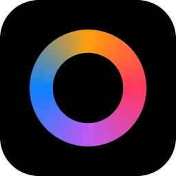
MUOODMaking Use Of Old Device.
The phone in your drawer becomes a live companion screen for your Mac: now playing with synced lyrics, a deck of buttons, Mac controls, vitals, your repos, the weather and a clock. Apple’s StandBy, if StandBy did a lot more — over a USB cable or Wi-Fi.
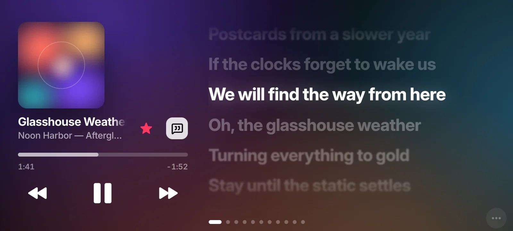
01Why it exists
A Stream Deck gives you buttons. Apple’s StandBy gives you a clock and a widget or two. What I actually wanted beside my Mac was both, and more: the song that’s playing and its lyrics, a way to change the volume or kill the mic without hunting for it, and a glance at whether my laptop was struggling.
Meanwhile there was a perfectly good phone sitting in a drawer, doing nothing.
So MUOOD is a web app. The Mac runs a small server; the old phone just opens a page. No app store, no install on the phone — a browser and a cable, or the same Wi-Fi, is enough. Plug it in and the Mac opens MUOOD on the phone by itself.
Hence the name: Making Use Of Old Device.
02The screens
Eleven full-screen pages, each one switchable and reorderable from the Mac. Swipe the phone, use the arrow keys, or pick a page.
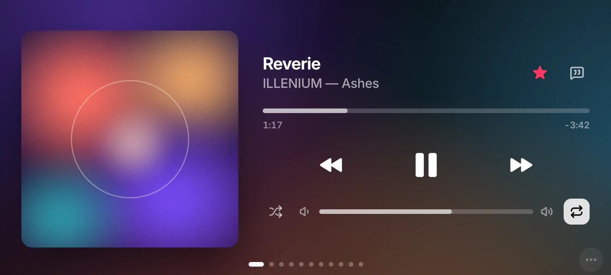
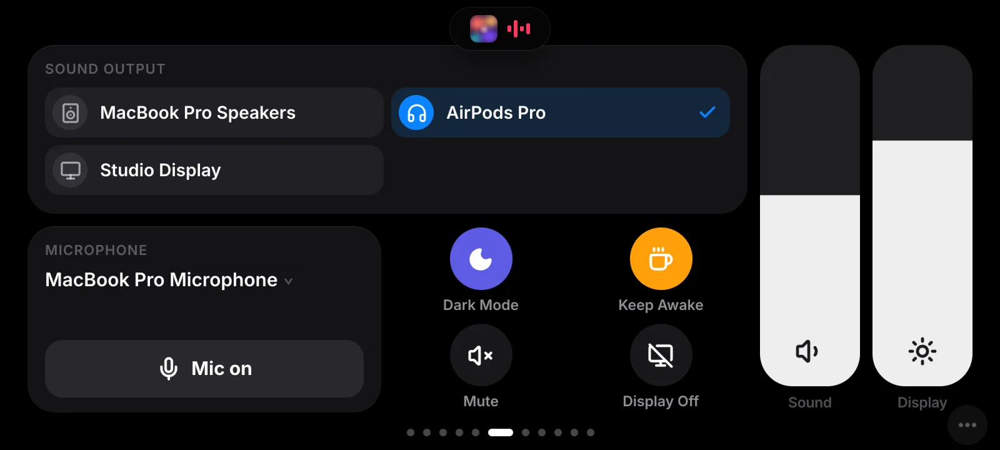
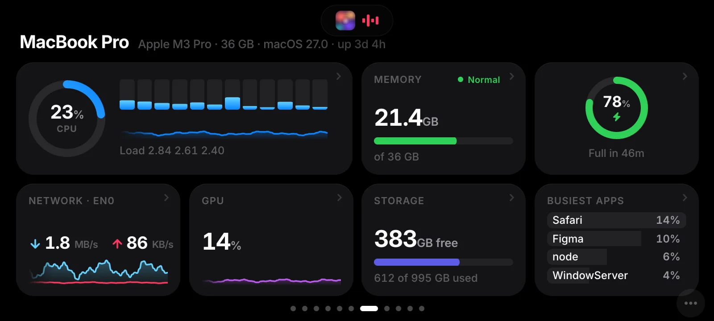
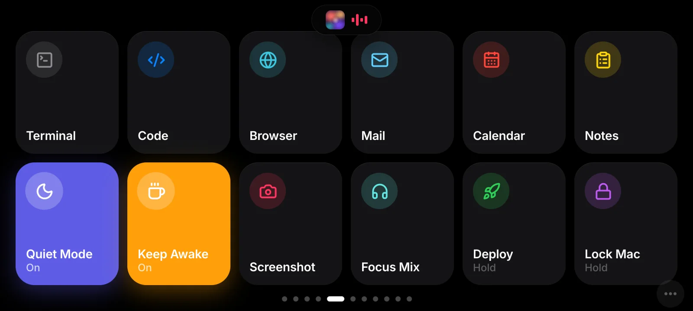
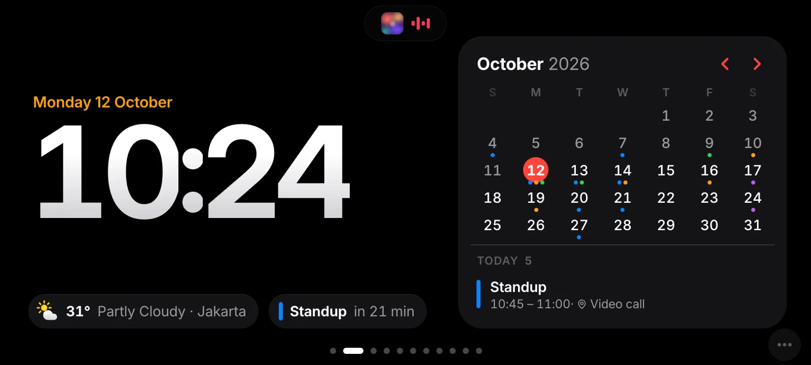
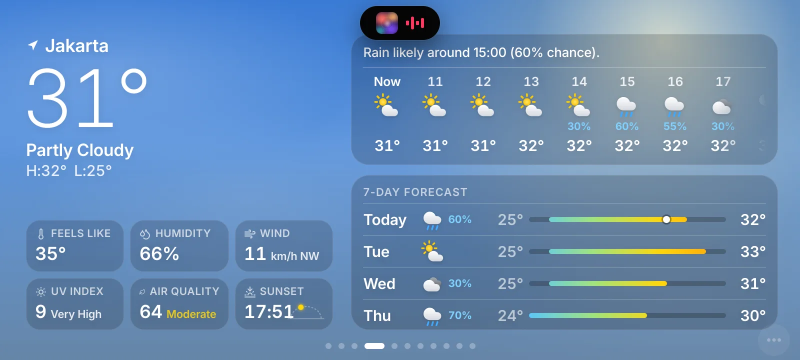
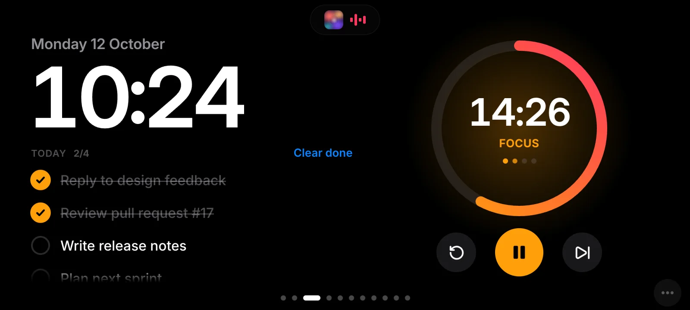
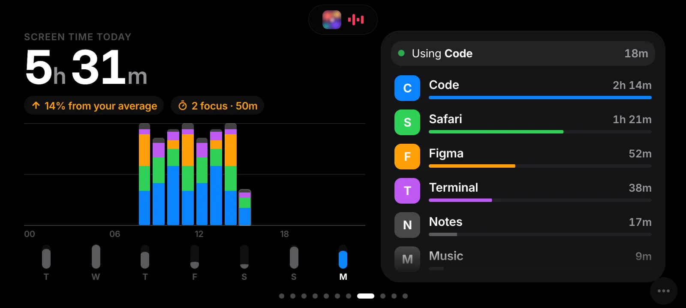
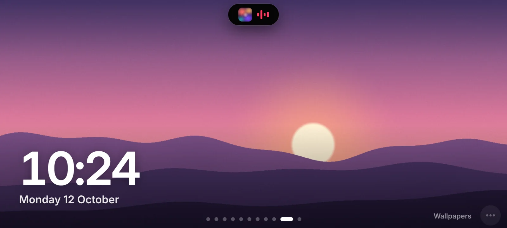
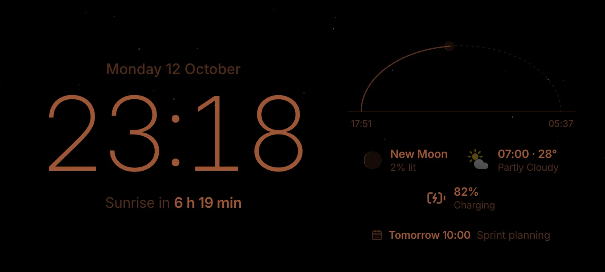
Real screenshots of MUOOD’s phone UI, running on invented demo data. The song is a real favourite of mine; the cover art is a stand-in.
03Try it
The phone can reach the Mac two ways. While it’s on one, it remembers the other. If the current route has been silent for five seconds, it asks both at once and moves to whichever answers first.
A simulation of the real logic, in real time. The address is an example; the timings — five seconds of silence, a check every three — are the app’s.
04What it does
Apple Music in near real time: play, skip, seek, shuffle, favourite. Lyrics are time-synced; tap a line to jump to it. The background takes its colours from the cover.
Volume and output device, mic mute, Dark Mode, Keep Awake, Display Off and brightness. A dot appears when the mic or camera is in use.
Open an app, a link or a folder; run a Shortcut, a shell command or an AppleScript; flip a toggle. Risky ones need a hold to confirm.
CPU per core, memory pressure, battery, network, GPU, storage and the busiest apps — read from macOS’s own tools, no admin password.
Local git repos, GitHub CI and Vercel deploys, with a toast when something goes live or fails.
Clock and calendar, weather, a focus timer, screen time, a photo frame, and a dim Night Stand that warns you if the phone stops charging.
05How it’s built
Three parts, each doing only what it’s good at — and nothing at all while no phone is connected.
async function tryOtherRoute() {
if (switching || isPreview || !link.key || link.status !== 'offline' || Date.now() - offlineSince < SWITCH_AFTER_MS) return;
const others = link.via === 'usb' ? savedWifi() : [`http://localhost:${location.port || '80'}`];
if (!others.length) return;
switching = true;
try {
const base = await Promise.any(others.map(answers));
if (link.status !== 'offline') return (switching = false); // came back by itself meanwhile
location.replace(`${base}/#k=${link.key}`);
} catch {
switching = false; // nowhere else to go (yet)
}
}
setInterval(() => void tryOtherRoute(), 3000);06Build notes
Every few seconds the Mac checks for Android phones over adb and opens a reverse tunnel, so the phone’s own localhost reaches the Mac. If no MUOOD tab shows up, it opens Chrome on the phone for you, reusing the same tab. Each tab has a stable id, so stale connections get closed.
A long-running JavaScript-for-Automation process listens for Music’s own change notifications, with a light poll to fill gaps. The playhead is sent as a position plus a timestamp, and the phone animates it every frame, corrected for the gap between the two clocks.
An exact lookup on LRCLIB first, then a search with “feat.” and “remaster” stripped, matching the length within four seconds and preferring synced lyrics. Results are cached; the current line is found by binary search and lit 0.35 s early, so it feels on time.
Animations touch only transform and opacity, album colours come from a 24 × 24 thumbnail, and hidden pages stop animating. The whole UI drifts three pixels every two minutes against burn-in, and a blank page reloads itself with a growing back-off.
Fair print: USB mode is for Android phones, now playing works with Apple Music, and the phone needs a reasonably current browser — old hardware, not an old browser.